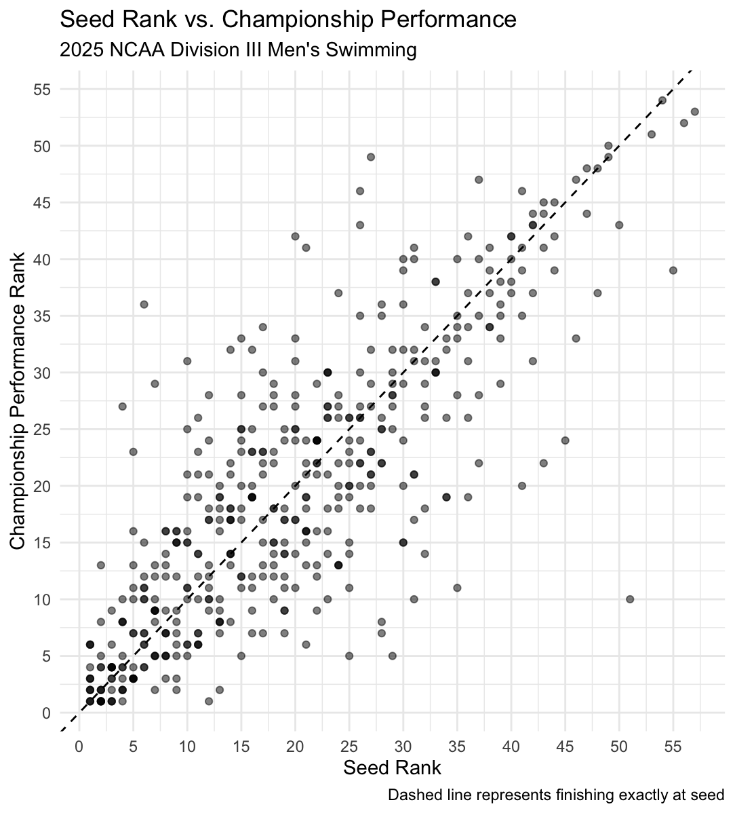
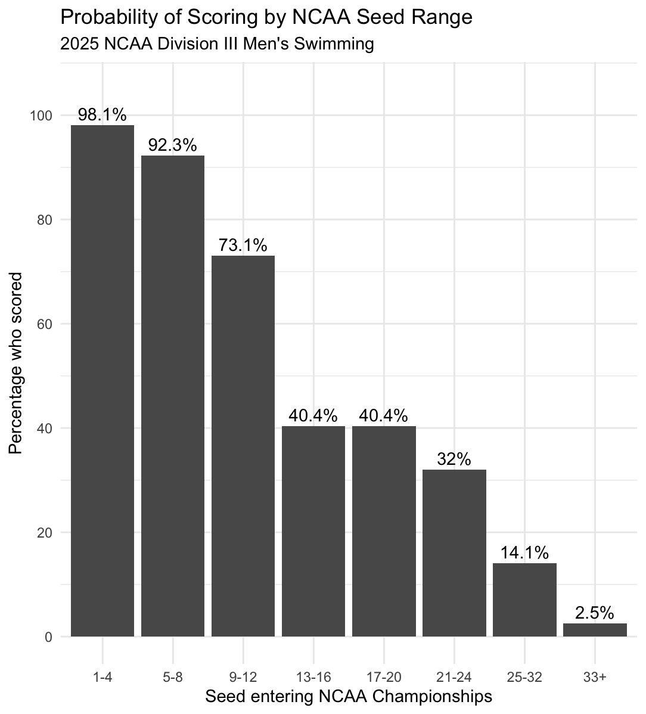
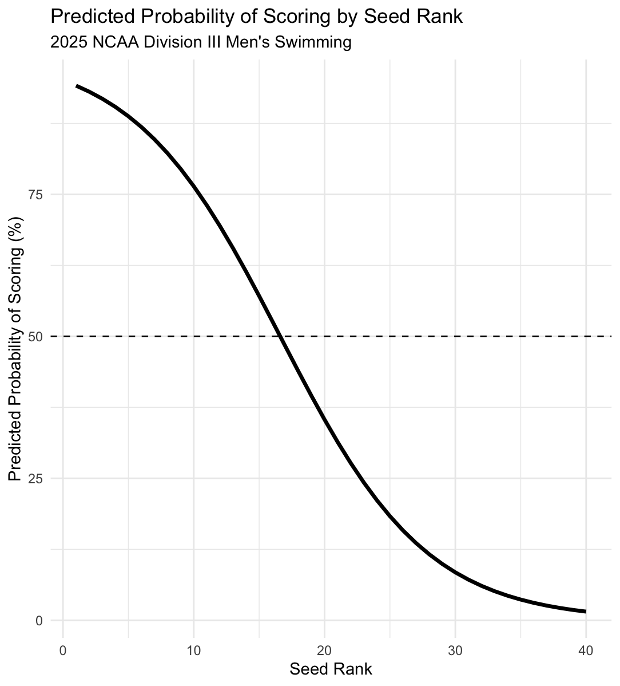
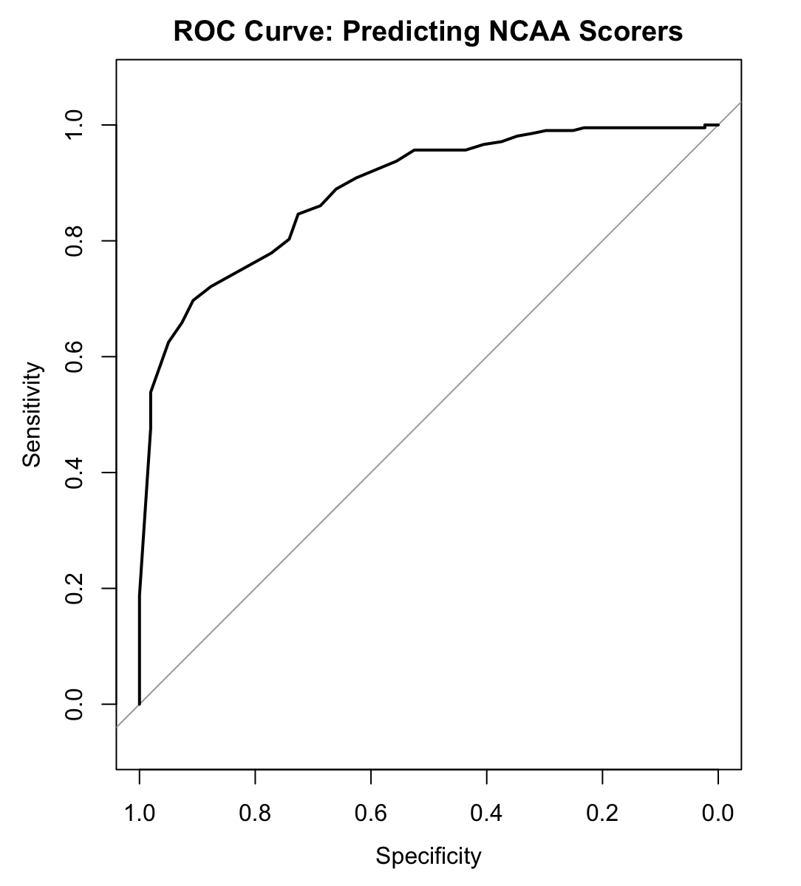

INDEPENDENT DATA ANALYTICS PROJECT · 2026
NCAA Division III Swimming Championship Performance Analysis
Analyzing how pre-meet seed rankings relate to championship performance and using classification modeling to estimate the probability of scoring at the NCAA Championships.
01 · THE QUESTION
How well does seed position predict NCAA championship performance?
Before the NCAA Championships, swimmers are ranked using their qualifying times from throughout the season. These seed rankings provide an expectation for how the meet might unfold, but championship performance can differ significantly from those projections.
I wanted to determine how accurately seed rankings represented actual championship performance and whether seed position could be used to estimate a swimmer's probability of scoring.
02 · THE DATA
Every individual men's swimming event from the 2025 championship.
I compiled performance data from the 2025 NCAA Division III Men's Swimming Championships. Each observation represents one swimmer competing in one individual event.
The dataset included seed rankings and seed times along with preliminary and finals results, allowing me to compare pre-meet expectations with championship performance.
467
Swimmer-event observations
13
Individual swimming events
2025
NCAA DIII Championship
03 · MY APPROACH
From championship results to a scoring model.
01
Prepare
Organized seed times, seed rankings, preliminary results, and finals results into one analysis-ready dataset.02
Engineer
Created variables measuring time change, rank change, performance relative to seed, and NCAA scoring outcomes.03
Analyze
Examined championship performance, event-level differences, seed accuracy, and scoring patterns.04
Model
Built a logistic regression model to estimate scoring probability using a swimmer's seed rank.05
Evaluate
Evaluated classification performance using accuracy, precision, recall, specificity, thresholds, ROC, and AUC.04 · CHAMPIONSHIP PERFORMANCE
How closely did swimmers perform to their seed?
I first examined changes in both swimming time and ranking to understand how athletes performed relative to their pre-meet expectations.
0.326%
Average increase from seed time
47.5%
Outperformed seed rank
5.51
Average rank difference
On average, swimmers performed approximately 0.326% slower than their seed times. At the same time, 47.5% of performances finished ahead of their original seed position.
The average swimmer finished 5.51 places away from their seed, while 64.1% of performances finished within five places and 86.5% finished within ten places.
05 · SEED VS. PERFORMANCE
Seed rank was strongly related to championship performance.
Because both seed position and championship performance are rankings, I used Spearman rank correlation to measure the relationship between the two variables.
0.797
Spearman correlation
64.1%
Finished within 5 places
86.5%
Finished within 10 places
The analysis produced a Spearman correlation of 0.797, showing a strong positive relationship between seed rank and championship performance rank.
Higher-seeded swimmers generally performed better, but the spread around the expected finish line shows that meaningful movement still occurred throughout the field.

Relationship between pre-meet seed rank and championship performance rank. The dashed line represents finishing exactly at seed.
06 · WHO ACTUALLY SCORES?
Being seeded in the top 16 did not guarantee scoring.
NCAA individual events score through 16th place, making the top 16 on the psych sheet a natural projected scoring group. I compared those projections with the swimmers who actually finished in scoring position.
76.0%
Top-16 seeds who scored
24.0%
Scoring spots from outside top 16
50
Outside top-16 scorers
Nearly one out of every four scoring positions was earned by a swimmer who entered the meet seeded outside the top 16.
Of the 208 swimmers seeded in projected scoring position, 158 ultimately scored. The remaining 50 scoring positions were earned by swimmers who entered the championship outside the top 16.
07 · SCORING PROBABILITY
Scoring probability changed dramatically across seed ranges.
I grouped swimmers by seed position to examine how the likelihood of scoring changed throughout the psych sheet.
98.1%
Seeds 1–4 scored
73.1%
Seeds 9–12 scored
40.4%
Seeds 13–16 scored
The top seeds were extremely likely to score, with 98.1% of swimmers seeded 1–4 and 92.3% of swimmers seeded 5–8 finishing in scoring position.
One of the most interesting results occurred around the scoring cutoff. Seeds 13–16 and seeds 17–20 both scored at exactly a 40.4% rate in the 2025 championship.

Percentage of swimmers who scored within each pre-meet seed range. Scoring probability decreased substantially as seed rank became lower.
08 · PREDICTING SCORING
Can seed rank estimate a swimmer's probability of scoring?
I built a logistic regression model using seed rank to estimate whether a swimmer would finish in an NCAA scoring position.
Seed rank was a statistically significant predictor of scoring. Each one-position decrease in seed ranking was associated with approximately a 16.3% decrease in the odds of scoring.

Logistic regression estimates of scoring probability by seed rank. The model's 50% probability point occurs around seed 16–17.
The model estimated that the probability of scoring falls below 50% around seed 16–17, closely matching the NCAA's actual 16-place scoring cutoff.
09 · MODEL EVALUATION
Evaluating the scoring classifier.
I evaluated the logistic regression model using a 50% classification threshold and calculated accuracy, precision, recall, and specificity.
78.6%
Accuracy
76.0%
Precision
76.0%
Recall
At the 50% threshold, the model correctly classified approximately 78.6% of swimmer-event observations. Precision and recall were both 76.0%, while specificity was 80.7%.
I also tested probability thresholds ranging from 0.10 through 0.90. Lower thresholds increased recall, while higher thresholds increased precision and specificity. Of the thresholds examined, 0.60 produced the highest overall accuracy at approximately 80.7%.
10 · ROC & AUC
Measuring performance across every classification threshold.
Rather than evaluating the classifier at only one probability threshold, I used a receiver operating characteristic curve to examine the tradeoff between sensitivity and specificity across possible thresholds.
0.887
Area Under the Curve
80.7%
Specificity at 0.50
0.60
Highest-accuracy tested threshold
The model produced an AUC of 0.887, indicating strong separation between scorers and non-scorers within the observed 2025 championship data.

ROC curve for the logistic regression scoring model. The model produced an AUC of 0.887.
11 · KEY FINDING
Seed rank matters, but the psych sheet doesn't tell the whole story.
Seed rankings were strongly related to championship performance, but 24% of NCAA scoring positions were still earned by swimmers seeded outside the top 16.
The analysis showed that pre-meet rankings provide useful information about likely championship outcomes. Top seeds were substantially more likely to score, and seed rank showed a strong relationship with actual performance.
However, the movement around the scoring cutoff shows why championship results cannot be determined from the psych sheet alone.
12 · LIMITATIONS
Understanding what the model can and cannot tell us.
This analysis examines only the 2025 NCAA Division III Men's Swimming Championships. Patterns from one championship may not represent Division III swimming across multiple seasons.
The logistic regression model was also trained and evaluated using the same 2025 dataset. Therefore, its classification metrics describe performance on the observed data and should not be interpreted as validated predictive performance on future NCAA Championships.
A future extension of the project could incorporate multiple championship seasons and evaluate the model using completely unseen championship data.
13 · WHAT I LEARNED
Turning a question I care about into a complete analytics project.
This project gave me experience taking an analysis from raw championship data through data preparation, exploratory analysis, statistical testing, predictive modeling, model evaluation, and final communication.
I strengthened my skills in R, logistic regression, classification, threshold selection, ROC analysis, and data visualization while learning how different analytical methods can work together to answer one larger question.
Most importantly, the project allowed me to apply data analytics to a sport I understand deeply and turn familiar swimming results into measurable insights about championship performance.
← Back to Projects